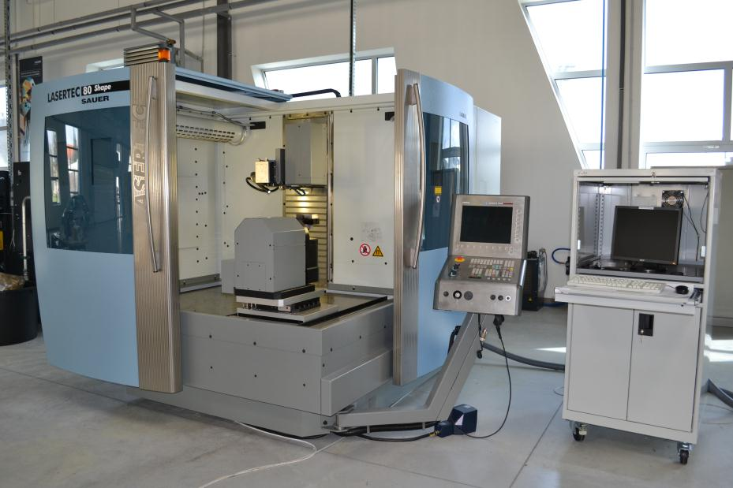
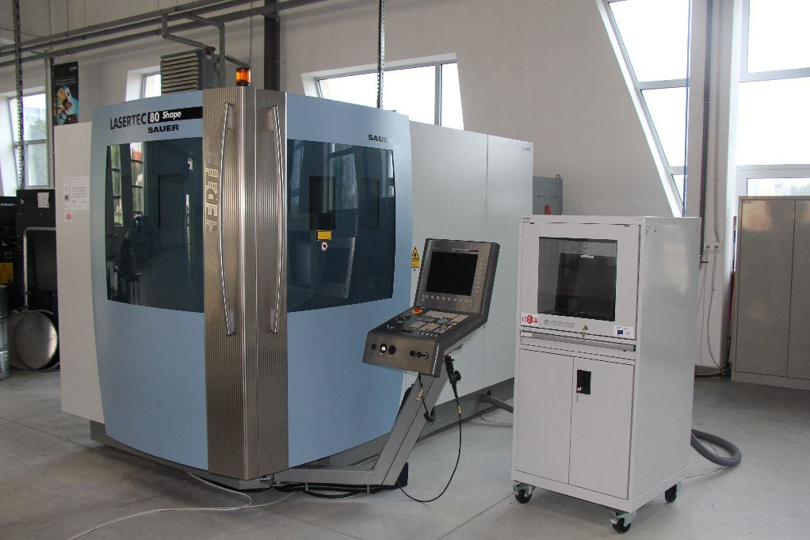
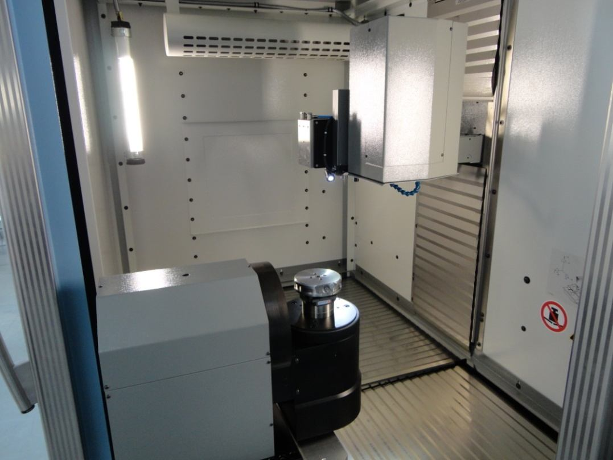
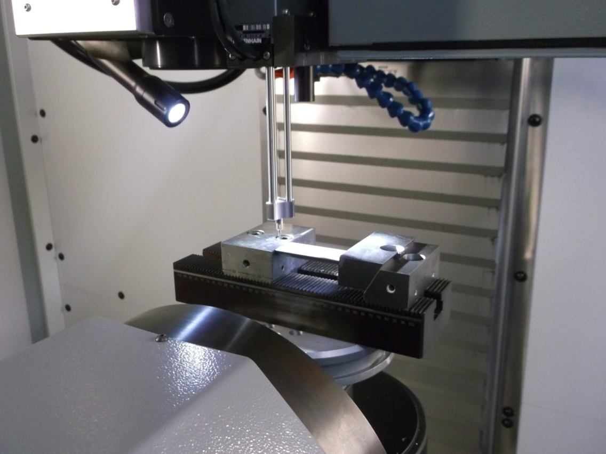
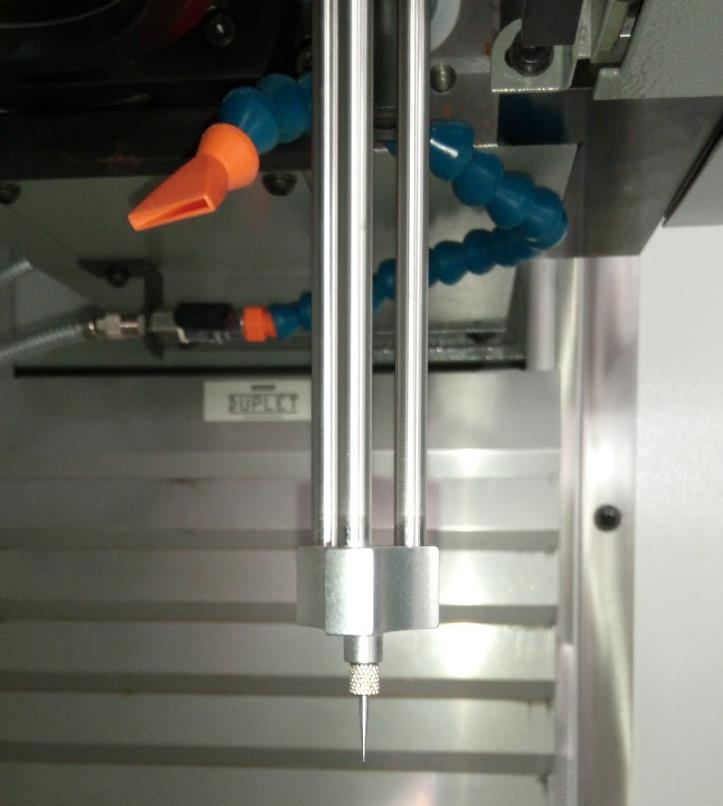
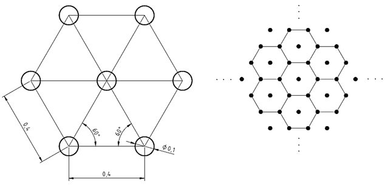
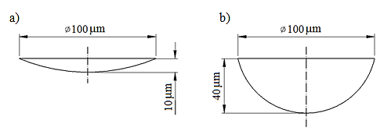

Päťosový presný laserový obrábací systém · DMG MORI
Centrum excelentnosti päťosového obrábania (CE5AM)
Materiálovotechnologická fakulta STU so sídlom v Trnave

CE5AM, MTF STU Trnava

LASERTEC 80 Shape SAUER — viditeľný ovládací panel CNC Siemens 840D
| Parameter | Hodnota |
|---|---|
| Typ lasera | Vláknový (yterbiový) Nd:YAG |
| Vlnová dĺžka | 1064 nm |
| Stredný výkon lasera | 100 W (max.) — voliteľne až 200 W |
| Prevádzkový režim | Iba pulzný |
| Rozsah frekvencie pulzov | 20 – 100 kHz |
| Priemer lúča v ohnisku | ~1 µm |
| Minimálna šírka stopy | od 40 µm |
| Os | Dráha / rozsah |
|---|---|
| Os X | 800 mm |
| Os Y | 500 mm |
| Os Z (fokusácia) | 700 mm |
| Os B (výkyvná) | −110° až +150° |
| Os C (rotačná) | 360° |
| Konfigurácia | Veľkosť stola | Max. zaťaženie |
|---|---|---|
| Trojosová | 900 × 600 mm | 200 kg |
| Päťosová (malý) | Ø 200 mm | 14 kg |
| Päťosová (veľký) | Ø 400 mm | 40 kg |

Pracovný priestor: skenovacia hlava (hore), otočno-sklopný stôl (osi B+C, vľavo dole)
| Parameter | Hodnota |
|---|---|
| Rýchloposuv X / Y | 120 / 120 m/min |
| Rýchloposuv Z | 30 m/min |
| Zrýchlenie (X / Y) | > 1,2 g |
| Rozsah rýchlosti skenovania | 100 – 4 000 mm/s |

3D meracia sonda (položka 7) v kontakte s obrobkom na otočnom stole
| Komponent | Systém |
|---|---|
| Riadenie CNC | Siemens 840D powerline / solutionline |
| Riadenie laserového procesu | LaserSoft 3D — samostatný riadiaci systém |
| Programovací softvér | LpsWin — import bitmáp, dráhy |

Hrot 3D meracej sondy — na rýchle nastavenie obrobku a meranie hĺbky
| Laser | |
|---|---|
| Typ zdroja | Vláknový Nd:YAG (yterbiový) |
| Výkon | 100 W / 200 W |
| Ohnisková vzdialenosť | 100 / 160 / 255 mm |
| Frekvencia pulzov | 20 – 100 kHz |
| Rýchlosť skenovania | 100 – 4 000 mm/s |
| Priemer lúča | ~1 µm |
| Šírka stopy | od 40 µm |
| Stroj a inštalácia | |
|---|---|
| Príkon | max. 72 kVA |
| Prevádzkové napätie | 400 V / 50 Hz |
| Rozmery stroja | 3335 × 2058 × 2290 mm |
| Zastavaná plocha (všetky zariadenia) | 4500 × 6000 × 2300 mm |
| Celková hmotnosť | 7 000 kg |
| Riadiaci systém | Siemens 840D |
Zdroj: technický list DMG MORI LASERTEC 80 Shape (2013 – 2017)
| Aplikácia | Opis |
|---|---|
| Textúrovanie vstrekovacích foriem | Gravírovanie jemných povrchových štruktúr do tvarových dutín foriem |
| Výroba lámačov triesok | Mikroobrábanie rezných doštičiek (spekaný karbid) |
| Textúrovanie povrchu | Funkčné tribologické textúry — jamky, drážky, šrafovanie |
| Štruktúrovanie tvárniacich nástrojov | Päťosové laserové štruktúrovanie veľkých lisovacích nástrojov |
| Obrábanie úzkych foriem | Päťosové gravírovanie foriem s odvzdušňovacími kanálmi |
| Ablácia povlakov | Selektívne odstraňovanie povlakov PVD/CVD (šírka stopy ≥ 40 µm) |

Hexagonálne pole jamiek — geometria vzoru s roztečou 0,4 mm, jamky Ø 0,1 mm

Prierezy jamiek: a) plytká, hĺbka 10 µm, b) hlboká, hĺbka 40 µm — obe Ø 100 µm
| Parameter | LASERTEC 80 Shape | LASERTEC 210 Shape |
|---|---|---|
| Os X [mm] | 800 | 1 800 |
| Os Y [mm] | 500 | 2 100 |
| Os Z [mm] | 700 | 1 250 |
| Päťosový stôl [mm] | Ø 200 / 400 | Ø 1 850 |
| Max. zaťaženie päťosového stola [kg] | 14 / 40 | 8 000 / 10 000 |
| Rýchloposuv X/Y [m/min] | 120 / 120 | 60 / 40 |
| Celková hmotnosť [kg] | 7 000 | 42 000 |
| Príkon [kVA] | max. 72 | max. 103 |
Zdroj: DMG MORI (2013)
| Parameter | Použitý rozsah |
|---|---|
| Výkon lasera | 10 – 100 W (10 – 100 % max.) |
| Frekvencia pulzov | 20 – 100 kHz |
| Rýchlosť skenovania | 200 – 4 000 mm/s |
| Ohnisková vzdialenosť | 100 mm (typická pri mikroobrábaní) |
| Priemer laserovej stopy | 0,025 – 0,1 mm |
| Hĺbka úberu vrstvy | ~1 µm na prechod |
| Max. hĺbka textúry | až 40 µm na prvok |
| Doba trvania pulzu | 10 ms – 120 ns (podľa režimu) |
Zdroj: experimentálne štúdie spekaného karbidu, zliatin Ti a nástrojovej ocele — CE5AM MTF STU Trnava
Zdroj údajov: technická dokumentácia DMG MORI LASERTEC 80 Shape (2013 – 2017)
Experimentálne výsledky: študentské záverečné práce, MTF STU Trnava